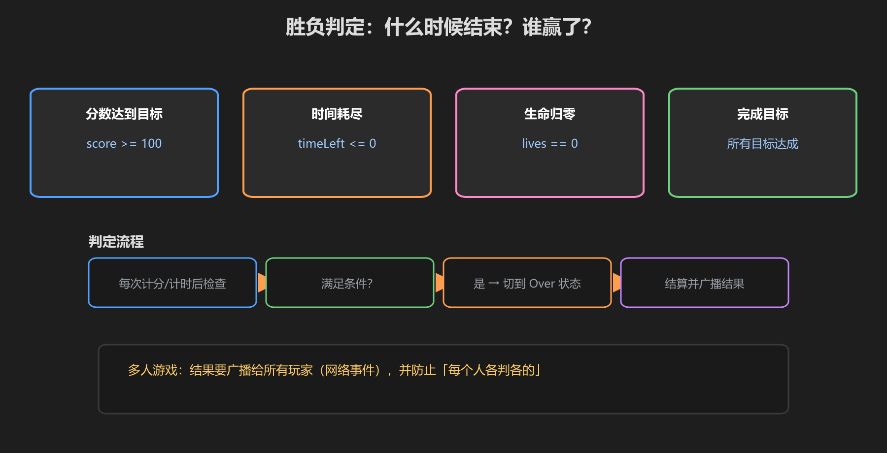
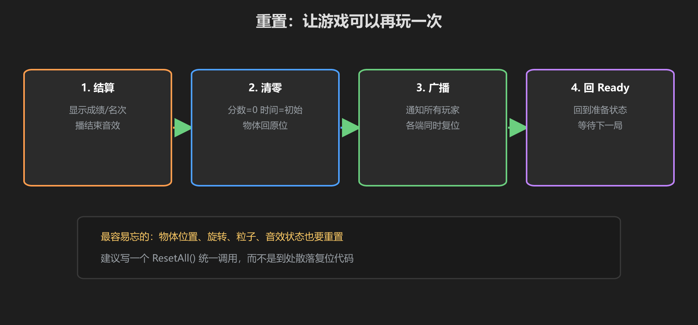

第 4 篇：胜负与重置 — 结束，然后重来
没有结束的游戏不是游戏，没有重置的游戏只能玩一次。这一篇讲清楚"什么时候结束、怎么重新开始"。
1. 胜负判定：结束条件

图：分数 / 时间 / 生命 / 目标，四种常见结束条件
| 条件 | 代码 | 适用 |
|---|---|---|
| 分数达标 | score >= 100 | 抢答、收集 |
| 时间耗尽 | timeLeft <= 0 | 限时挑战 |
| 生命归零 | lives == 0 | 躲避、生存 |
| 目标完成 | 所有任务达成 | 解密、闯关 |
判定时机：每次计分/计时改变后立刻检查，命中即切换状态。写成一个小函数 CheckEndCondition()，在加分、减血、时间到三处调用。
2. 多人游戏的胜负：谁是权威？
// 不要在每个人的客户端各判各的！
// 正确做法：状态和分数在网络上是同步的（[UdonSynced]），
// 谁改动同步变量，其他端自动更新，胜负判定对所有人一致。
[UdonSynced] public int score;- 分数、状态这些关键数据要网络同步（详见《网络同步》教程）
- 不要"每个客户端自己算一遍"，那会分叉
- 结束时的结算（名次、特效）用网络事件广播，人人看到一样的结果
3. 重置：让游戏能再玩一次

图：结算 → 清零 → 广播 → 回到 Ready
public void ResetAll()
{
// ① 所有变量复位
score = 0;
timeLeft = 60f;
state = GameState.Ready;
// ② 物体回原位（可拾取物、门、目标）
// ③ 粒子、音效状态复位
// ④ 广播通知所有玩家（网络事件）
SendCustomNetworkEvent("ResetAll");
}最容易忘的：物体位置、旋转、粒子系统、音效、UI 文本 —— 都要重置。建议所有复位代码收进一个 ResetAll()，别散落各处。
学前检查清单
- 写了自己的结束条件函数 CheckEndCondition()
- 理解了多人游戏"要同步、不要各算各的"
- 写了一个 ResetAll() 并覆盖了变量和物体